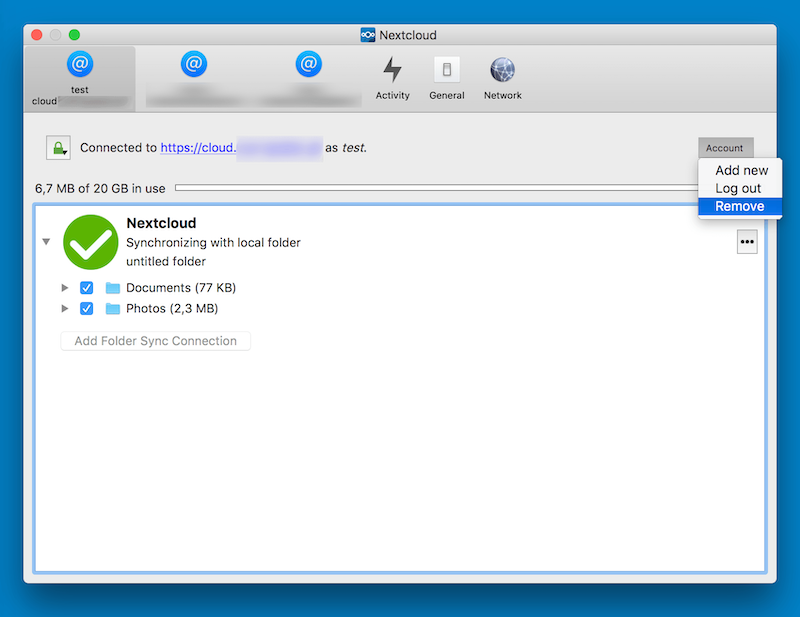

Vanliga frågor
Så fungerar funktionen ”Redigera lokalt”
This functionality depends on the desktop client ability to register the nc:// protocol handler. That is the handler used by the server to open a file locally. This will allow the desktop client to open a document with the local editor when you click on the option ”Edit locally” in your Nextcloud instance.
Observera
Om hanteraren inte registreras korrekt kan skrivbordsklienten inte öppna dokumentet i det lokala redigeringsprogrammet när du klickar på alternativet ”Redigera lokalt” i din Nextcloud-instans, oavsett vilken webbläsare eller Linux-distribution du använder.
Webbläsaren visar då följande varning: ”Det gick inte att starta ’nc://…’ eftersom schemat inte har någon registrerad hanterare.”
Så aktiverar du funktionen
I Windows måste du installera skrivbordsklienten med MSI-installationsprogrammet. I Linux behöver du använda ett tredjepartsprogram för att integrera AppImage-filen med systemet.
I Linux
Vi använder AppImage eftersom formatet har bred kompatibilitet. För att kunna använda skrivbordsklientens samtliga funktioner behöver du dock ett tredjepartsprogram som integrerar AppImage-filen med systemet. Vi har testat AppImageLauncher. Ett alternativ är Go AppImage.
I Windows
The MSI installer will alter your system registry to register the nc:// protocol handler.
Alternatively, you can manually register the nc:// protocol handler:
Spara följande innehåll i en .reg-fil:
Windows Registry Editor Version 5.00
[HKEY_CLASSES_ROOT\nc\shell\open\command]
@="\"C:\\Program Files\\Nextcloud\\nextcloud.exe\" \"%1\""
Dubbelklicka på .reg-filen för att importera den till registret.
Mer information finns på https://nextcloud.com/blog/nextcloud-office-release-solves-document-compatibility-overhauls-knowledge-management/
Vissa filer laddas ständigt upp till servern trots att de inte har ändrats
Det är möjligt att ett annat program ändrar filens ändringsdatum. Om filen har filändelsen .eml ändrar Windows automatiskt och fortlöpande dessa filer, såvida du inte tar bort \HKEY_LOCAL_MACHINE\SOFTWARE\Microsoft\Windows\CurrentVersion\PropertySystem\PropertyHandlers från Windows-registret. Mer information finns på http://petersteier.wordpress.com/2011/10/22/windows-indexer-changes-modification-dates-of-eml-files/
Synkroniseringen stoppas vid fler än 100 nivåer av undermappar
Synkroniseringsklienten är avsiktligt begränsad till ett mappdjup på högst 100 undermappar. Den fasta gränsen skyddar mot fel som orsakas av cykler, exempelvis loopar med symboliska länkar. Om en djupt nästlad mapp undantas från synkroniseringen visas den tillsammans med andra ignorerade filer och mappar på fliken ”Inte synkroniserat” i panelen ”Aktivitet”.
En varning visades om att ändringar i synkroniserade mappar inte kunde övervakas tillförlitligt
Om den synkroniserade mappen innehåller mycket många undermappar i Linux kan operativsystemet sakna tillräckligt många inotify-bevakningar för att övervaka ändringar i alla mappar.
I så fall kan klienten inte starta synkroniseringen omedelbart när en fil ändras i någon av de mappar som inte övervakas. Klienten visar i stället varningen och genomsöker mapparna efter ändringar med regelbundna intervall (som standard varannan timme).
Du kan lösa problemet genom att ange ett högre värde för sysctl-inställningen fs.inotify.max_user_watches. Det kan vanligtvis göras tillfälligt:
echo 524288 > /proc/sys/fs/inotify/max_user_watches
eller permanent genom att ändra /etc/sysctl.conf.
Jag vill flytta den lokala synkroniseringsmappen
Nextclouds skrivbordsklient har ingen direkt funktion för att ändra den lokala synkroniseringsmappen. Det går ändå att göra, även om tillvägagångssättet är något ovanligt. Du behöver göra följande:
Ta bort den befintliga anslutningen som synkroniserar med fel mapp
Lägg till en ny anslutning som synkroniserar med den önskade mappen

To do so, click the ”Account” drop-down menu and then click ”Remove”. This will display a ”Confirm Account Removal” dialog window.

Klicka på ”Ta bort anslutning” om du är säker.
Öppna sedan rullgardinsmenyn Konto igen och klicka den här gången på ”Lägg till ny”.

This opens the Nextcloud Connection Wizard but with an extra option. This option provides the ability to either: keep the existing data (synced by the previous connection) or to start a clean sync (erasing the existing data).
Viktigt
Var försiktig innan du väljer alternativet ”Starta en ren synkronisering”. Den gamla synkroniseringsmappen kan innehålla stora datamängder, ibland flera gigabyte eller terabyte. När klienten har skapat den nya anslutningen måste den i så fall hämta alla dessa data igen. Flytta eller kopiera i stället först den gamla lokala synkroniseringsmappen, som innehåller en kopia av de befintliga filerna, till den nya platsen. Välj sedan ”Behåll befintliga data” när du skapar den nya anslutningen. Nextcloud-klienten kontrollerar filerna i den nyligen tillagda synkroniseringsmappen, konstaterar att de överensstämmer med filerna på servern och behöver därför inte hämta dem igen.
Gör ditt val och klicka på ”Anslut …”. Därefter leds du genom anslutningsguiden på samma sätt som när du konfigurerade den tidigare synkroniseringsanslutningen, men nu kan du välja en ny synkroniseringsmapp.
Jag vill ändra språket i användargränssnittet
För att göra detta måste du ändra konfigurationsfilen nextcloud.cfg. Lägg till en rad med det önskade språket i avsnittet General.
[General]
language=de